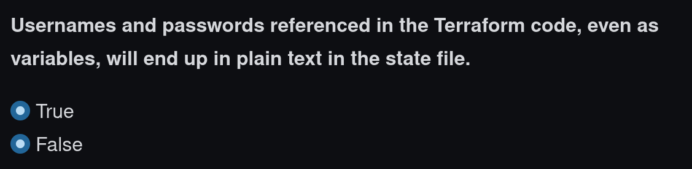
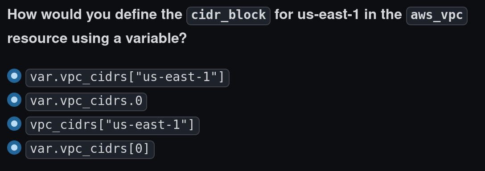
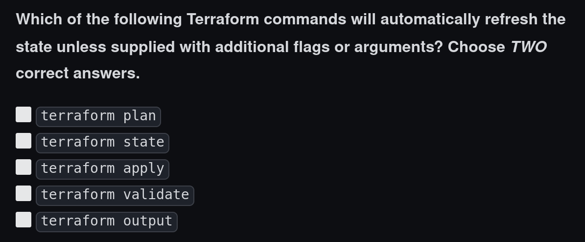
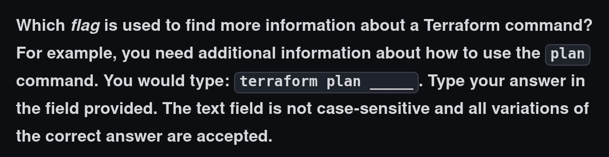

Le QCM
Questions "True or False"

Le QCM
Questions "Single Choice"

Le QCM
Questions "Multiple Choice"

Le QCM
Questions "Text Match"

Pré-requis
Environnement physique calme, bien éclairé, propre
# Quels sont les avantages de passer la certification Terraform ?
- [ ] Obtenir des réductions pour Terraform Cloud
- [x] Obtenir un badge pour l’exposer sur ses réseaux sociaux
- [ ] Devenir contributeur Open Source à Terraform
- [x] Valider ses connaissances
# Combien de temps est valide la certification Terraform ?
- [ ] 6 mois
- [ ] 1 an
- [ ] 18 mois
- [x] 2 ans
# Qu’est-il autorisé pendant le passage de la certification ?
- [x] Boire de l'eau
- [ ] Écouter de la musique
- [ ] Répondre au téléphone
- [ ] Manger
- [ ] Faire une pause
# Quel thème n'est **pas** testé ?
- [ ] Le système des modules Terraform
- [ ] Les notions générale d’Infrastructure as Code
- [x] Le provider AWS
- [ ] Terraform Cloud
# Sur quelle plateforme sont délivrées le certificat et son badge ?
- [ ] LinkedIn
- [ ] developer.hashicorp.com
- [x] Credly
- [ ] Terraform Cloud
- [ ] PSI Secured browser
# Quels éléments sont contrôlés lors du passage de la certification ?
- [ ] la version de Terraform installée sur le poste de travail du candidat
- [x] l’identité du candidat
- [x] l'absence de moyens de communication dans la pièce
- [ ] les accès du candidat à Terraform Cloud
# Quels éléments sont affichés dans la fenêtre du PSI Secured Browser utilisé pour passer la certification ?
- [x] Un chronomètre indiquant le temps restant disponible
- [x] Un chat pour parler à l’examinateur
- [x] Des boutons permettant de changer la taille d’affichage
- [ ] Une fenêtre avec la documentation Terraform